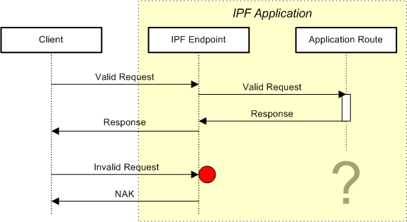

Handling messages rejected by the Web Service endpoint
Requests of Web Service-based transactions are automatically rejected, when at least one of the following applies:
- the request (or its first part in case of multi-part HTTP messages) does not contain a well-formed SOAP Envelope
- SOAP Body content is of incorrect type (e.g. plain text instead of ebXML for XDS/XCA)
- the payload is not accepted by the corresponding IPF component (e.g. a HL7v2 request denotes wrong message type in MSH-9 or wrong HL7 version in MSH-12).
Moreover, the same “rejection” effect can occur in HL7v2-based Web Service transactions — an HL7v2 NAK with acknowledgement code ‘AR’ or ‘CR’ will be automatically generated when:
- the Camel route has not delivered anything that could be converted into HL7v2 response message
- the response message has wrong values in MSH-9 (message type) and MSH-12 (HL7 version).
Problem
Rejected request messages will not reach the Camel route, thus the application developer will not have any chance to handle them and even to be notified about them:

Solution
It is possible to configure a user-defined strategy (i.e. an implementation of the interface WsRejectionHandlingStrategy) which handles all rejected messages.
IPF provides two alternative abstract base classes for such strategies — a generic AbstractWsRejectionHandlingStrategy and a HL7v2-over-WS specific AbstractHl7v2WsRejectionHandlingStrategy. They differ in determination logic of whether the given interaction (represented by a CXF exchange) can be considered as failed.
On every message rejection, the provided strategy instance will receive a CXF exchange containing the request SOAP message in various formats, the automatically generated response message (SOAP fault or HL7v2 NAK), and the whole context information:

One of available SOAP message formats thereby is StringPayloadHolder. Before the SOAP Body has been parsed, this object holds the whole HTTP payload (possibly as MIME, i.e. with all attachments); after that, only SOAP payload is present for performance and memory saving reasons.
Example
Provide a derived implementation in form of a Spring bean:
<bean id="myRejectionHandlingStrategy"
class="org.openehealth.ipf.platform.camel.ihe.hl7v2ws.pcd01.MyRejectionHandlingStrategy" />
Reference it in the URI of the corresponding consumer endpoint:
from("pcd-pcd01:myEndpoint?rejectionHandlingStrategy=#myRejectionHandlingStrategy")
...
Important Hints
Implementors of the rejection handlers must be aware that some objects available from the CXF exchange instances — particularly Servlet contexts and HTTP sessions — should be handled very carefully. In particular, it should be assured that the rejection handlers do not contain any functionality (e.g. some type of queueing or durable collecting of received CXF exchanges and their elements) that could restrict resource management activities of the Java VM and the operating system.
Such restrictions may lead not only to system performance and scalability penalties, but also foster DDoS attacks, as hackers will be able to exhaust resources of a system simply by sending a bunch of invalid requests to it.
Furthermore, note that the rejection handling mechanism is not intended for changing of message content and/or message flow.